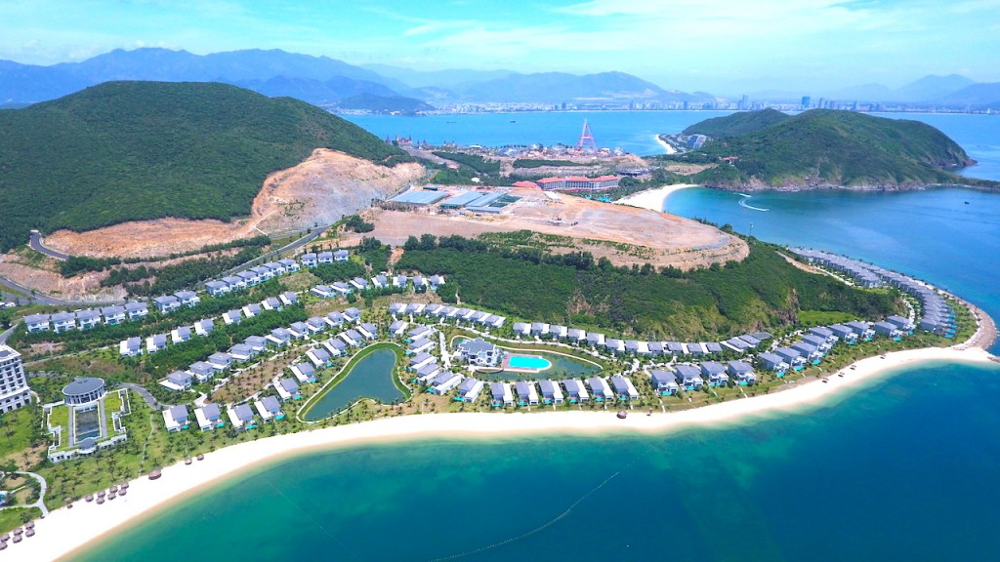
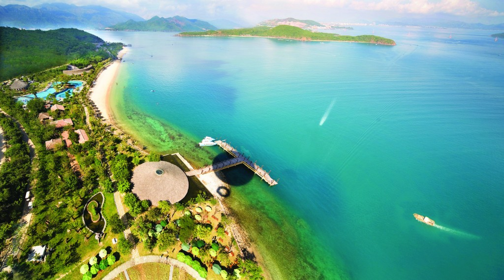

Nha Trang - Khu Du Lịch Đáng Đến
Thành phố Nha Trang là một trung tâm du lịch lớn của cả nước với nhiều danh lam thắng cảnh nổi tiếng, điều kiện thiên nhiên ưu đãi cả về vị trí, cảnh quan, khí hậu, cùng với nền tảng về lịch sử, nhân văn của mình.
Nha Trang – Khánh Hoà có khả năng phát triển nhiều loại hình du lịch đa dạng. Nằm ở vị trí trung tâm tỉnh Khánh Hòa, thành phố Nha Trang có diện tích 251 km2, bao gồm 27 xã, phường và 19 hòn đảo, với trên 2.500 hộ và khoảng 15.000 người sống trên các đảo.

Đảo lớn nhất là Hòn Tre rộng 36km2 nằm che chắn ngoài khơi khiến cho vịnh Nha Trang ( nằm trong số 29 vịnh đẹp nhất trên thế giới) trở nên kín gió và êm sóng. Nơi đây được nhiều du khách mệnh danh là “Hòn ngọc viễn đông” nhờ những bãi tắm đẹp, con đường nhựa xanh sạch, các ngôi biệt thự ẩn mình trong rừng hoa và cây xanh
Ngoài các sản vật biển, Nha Trang có nước yến/yến sào (hay tổ chim yến được chúng làm từ nước dãi của mình) và nem nướng Ninh Hòa. Ngoài ra, nói đến các món dân dã Nha Trang còn nổi tiếng qua món bún cá hay bánh căn. Với món bánh canh Nha Trang thì không giống với bất kỳ ở một địa phương nào khác. Ngoài ra tại Nha Trang còn có bong bóng cá, vi cá, nước mắm, khô cá thu được xếp vào loại ngon. Hải sản Nha Trang đa dạng và phong phú với rất nhiều loại và vô số những món ăn khác nhau, nổi tiếng có món nhum – còn gọi là cầu gai hay nhím biển ăn sống với cải bẹ xanh

Cảnh đẹp trời ban của nha trang cùng những thiết đế đẹp mắt đã khiến Nha Trang trở thành một khu du lịch đình đám được sự ưa chuộng của mọi lứa tuổi trong nước và Quốc Tế .
Nha Trang tuy có khí hậu nhiệt đời gió mùa, nhưng cũng chịu chi phối nhiều bởi khí hậu đại dương. Chính vì thế mà khí hậu Nha Trang tương đối ôn hòa, không quá khắc nghiệt như ở miền Bắc và cũng không quá thất thường như trong miền Nam. Mùa đông ở Nha Trang ít lạnh, mùa hè thường kéo dài nhưng nắng nóng không quá gay gắt. Thời tiết Nha Trang cũng có hai mùa mưa nắng rõ rệt. Thêm vào đó, thành phố biển Nha Trang lại nằm trong vùng ít chịu ảnh hưởng của gió bão. Chính vì thế mà du lịch Nha Trang quanh năm luôn sẵn sàng chào đón du khách ghé thăm.
- Từ tháng 1- 8: Mùa khô ngự trị khắp thành phố Nha Trang, thời tiết khá dịu, khô mát, thoáng đãng, vô cùng thích hợp với những chuyến du lịch Nha Trang theo bất cứ hình thức nào.
- Tháng 9 – 12: Những tháng cuối năm, Nha Trang bắt đầu chào đón những cơn mưa rả rích kèm theo chút se lạnh. Đôi lúc sẽ làm ảnh hưởng đến những kế hoạch tham quan của bạn. Do đó, nếu du lịch vào những tháng cuối năm, bạn nên trang bị đủ những vật dụng cần thiết như ô hay áo mưa, để tránh mất vui khi phải bất ngờ đối phó với những con mưa này.
Chắc hẳn ai đã từng có dịp ghé thăm Nha Trang rồi sẽ không bao giờ quên được vẻ đẹp hút hồn của những bờ biển dài những danh lam thắng cảnh đẹp mắt . Và cũng chắc chắn một điều là ai ai cũng muốn được tới đây ít nhất một lần để ngắm nhìn thành phố ngát xanh và mông mơ này !